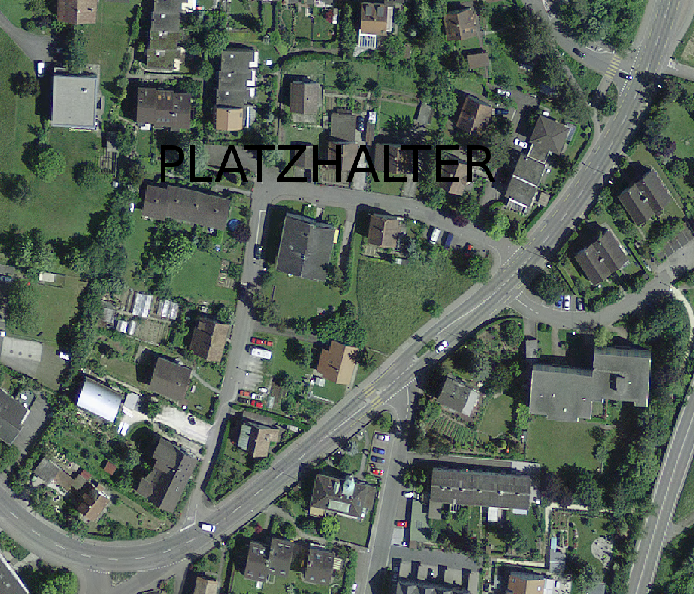

Eidgenössisches Departement für
Umwelt, Verkehr, Energie und Kommunikation UVEK
Bundesamt für Verkehr BAV Abteilung Sicherheit
Kataster der belasteten Standorte des Bundesamtes für Verkehr (KbS BAV): Standortdatenblatt BAV intern
Standort
B077 Betriebsstandort 077
Vollzugsbehörde
org40
Inhaber/in
Demo, Testuser Demoinstanz, 8003 Zürich
Weitere Standortnummern (z.B. Kanton)
B077
Beurteilung BAV
unbelastet
A) Standortdaten im öffentlich zugänglichen Kataster
Folgende Standortdaten werden im öffentlich zugänglichen Kataster der belasteten Standorte gemäss Art. 32 c des Umweltschutzge-
setzes (USG, SR 814.01), beziehungsweise Art. 5 und 6 der Altlasten-Verordnung (AltlV, SR 814.680) eingetragen und sind somit für
jede Person einsehbar:
BAV-Standortnummer
keine
Standortname
Betriebsstandort 077
Lage: (Art. 5 Abs. 3 Bst. a AltlV)
PLZ / Ort
1024 Ecublens VD
Gemeinde / Gemeinde-Nr. (BFS-Nr.)
Ecublens (VD) / 5635
Koordinaten (x,y)
2533825 / 1154660
Parzellennummer
Ecublens (VD): 22, 23, 685, DP 100
Art, Menge der an den Standort gelangten Abfälle: (Art. 5 Abs. 3 Bst. b AltlV)
Branche
6118 Bahn: Holzschwellenlager
Betrieb von / bis
1950 bis heute
Branche
6113 Bahn: Abstellgleis, Lokstandort
Betrieb von / bis
1975 bis heute
Ablagerungszeitraum, Betriebszeitraum oder Unfallzeitpunkt (Art. 5 Abs. 3 Bst. c AltlV)
Betriebszeitraum
1950 bis heute
Bereits durchgeführte Untersuchungen zum Schutz der Umwelt (Art. 5 Abs. 3 Bst. d AltlV)
Datum Ersteintrag im Kataster
2010-09-20
Untersuchungsstand gemäss AltlV
Historische Untersuchung abgeschlossen
Letzte Änderung des Katastereintrages am
2022-01-21
Beurteilung des Standorts gemäss Altlasten-Verordnung (Art. 5 Abs. 4 und 5 AltlV oder Art. 6 Abs. 1 Bst. a AltlV)
Beurteilung BAV
unbelastet
Rechtlicher Bezug
Unbelasteter Standort: keine Belastungen festgestellt und mit grosser
Wahrscheinlichkeit keine Belastungen zu erwarten. Kein Eintrag in Kataster.
Weiterer Handlungsbedarf
Kein weiterer Handlungsbedarf
Kartenauszug aus dem Kataster der belasteten Standorte des Bundesamtes für Verkehr (KbS BAV)
Standort
B077 Betriebsstandort 077
Gemeinde
Ecublens (VD)

Legende
Perimeter des StandortesMeter
Hinweis: Die dargestellten Hintergrunddaten haben nur informativen Charakter. Sie dienen ausschliesslich der besseren Lokalisierung des Standortes.
B) Zusätzliche Standortdaten für die Inhaberin
Folgende zusätzlichen Standortdaten werden der Inhaberin im Rahmen der Inhaberorientierung mitgeteilt, jedoch nicht im öffentlich
zugänglichen Kataster der belasteten Standorte eingetragen. Die Abgabe dieser zusätzlichen Daten an Dritte erfolgt nur mit
Zustimmung der Standortinhaberin (Ausnahme: Datenabgabe an Behörden für den behördeninternen Gebrauch).
Ergänzende Bemerkungen zum Standort
Generelle Bemerkungen
Standort Bemerkungen - 230881: Bemerkungen zum gesamten Standort
Ergänzende Bemerkungen Betriebe
Begründung Beurteilung und allfällige Nachforderungen
Begründung Beurteilung
Begründung Bewertung - 230882: Begründung der manuellen Bewertung eines Standorts
Antrag Inhaberin
Belastet, weder überwachungs- noch sanierungsbedürftig
Nachforderungen
nein
Ergänzende Bemerkungen zu Massnahmen Umweltschutz, zu Sanierungszielen, zu Umweltschäden und zu Vorkommnissen
Umweltbereich
Umwelteinwirkung
Ergänzende Bemerkungen
keine bekannt
-
-
Umweltdaten
Gewässerschutzbereich
übrige Bereiche
Schutzzone
keine
Relative Lage zum Grundwasser
Standort liegt über GW
Flurabstand
3.5 m
Nutzung Grundwasser im Abstrombereich
keine Angabe
Distanz zur Grundwasser-Nutzung im Abstrombereich
keine Angabe
Oberflächengewässer
keine Angabe
Durchlässigkeit
Lockergesteine mit mässiger Durchlässigkeit
Bemerkungen Umwelt
keine Angabe
Dokumentation zum Standort (Akten, Berichte, Briefe und andere)
Titel
Kategorie
Autor
Datum
Test-Dokument: 157981
E-Mail
2021-12-08
Test-Dokument: 157982
Brief
2021-12-08
Test-Dokument: 157960
E-Mail
test, Testuser Demoinstanz Ittigen
2021-11-02
Test-Dokument: 157956
Bericht
2021-07-29
Test-Dokument: 156545
Brief
2019-10-16
Test-Dokument: 156544
E-Mail
2019-10-01
Test-Dokument: 156543
E-Mail
test, Testuser Demoinstanz Ittigen
2019-09-12
Test-Dokument: 156546
Bericht
2019-01-22
C) BAV-interne Standortdaten
Folgende zusätzliche Standortdaten sind nur für den internen Gebrauch.
Geschäfte zum Standort (offene und abgeschlossene)
Geschäftstitel
Startdatum
Fälligkeitsdatum
Enddatum
Kataster: Mutation
2019-10-16
2019-10-17
2019-11-22
Kataster: Mutation
2021-10-29
2021-11-01
2022-01-21
Alle Dokumente und Bemerkungen der Geschäfte
Titel
Kategorie
Autor
Datum
Test-Dokument: 157981
E-Mail
2021-12-08
Test-Dokument: 157982
Brief
2021-12-08
Test-Dokument: 157960
E-Mail
test, Testuser Demoinstanz Ittigen
2021-11-02
Test-Dokument: 157956
Bericht
2021-07-29
Test-Dokument: 156545
Brief
2019-10-16
Test-Dokument: 156544
E-Mail
2019-10-01
Test-Dokument: 156543
E-Mail
test, Testuser Demoinstanz Ittigen
2019-09-12
Test-Dokument: 156542
Bemerkung
test, Testuser Demoinstanz Ittigen
2019-01-22
Test-Dokument: 156546
Bericht
2019-01-22
Beteiligte zum Standort
Name, Vorname, Tätigkeit
PLZ, Ort
Beziehungsart
Demo Martin, Testuser Demoinstanz
3003 Bern
Sachbearbeiter BAV
Demo, Testuser Demoinstanz
1014 Lausanne
Kantonale Fachstelle
Demo, Testuser Demoinstanz
8003 Zürich
Inhaber (Hauptinhaber AltlV)
Blog: Alle Bemerkungen (nicht öffentliche und öffentliche)
Kategorie
Bemerkung
Öffentlich
Verfasser
Standort Bemerkungen
Standort Bemerkungen - 230881: Bemerkungen zum gesamten Standort
nein
geko geko, 2025-01-10
Begründung Bewertung
Begründung Bewertung - 230882: Begründung der manuellen Bewertung eines Standorts
ja
geko geko, 2025-01-10
Interne Anmerkungen
Interne Anmerkungen - 230883: Interne Anmerkungen - nicht zur Veröffentlichung bestimmt
nein
geko geko, 2025-01-10
Interne Anmerkungen
Interne Anmerkungen - 230884: Interne Anmerkungen - nicht zur Veröffentlichung bestimmt